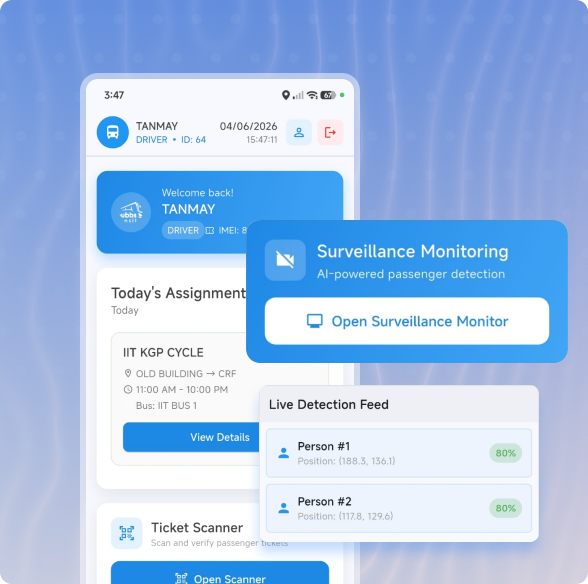
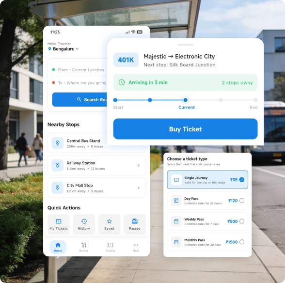

An Intelligent Urban Bus Transit Dispatch, Control and Surveillance System Using Artificial Intelligence and User Perception
Book a Demo
Build, organize, and refine routes with mapped stops and structured planning tools that reduce confusion across operational teams.
Update, expand, or retire routes seamlessly while keeping planning, dispatch, and field teams aligned through centralized route visibility.
Define service assumptions and operating parameters clearly so scheduling decisions remain consistent, accurate, and operationally practical across routes.

Centralize operational datasets, planning assumptions, and service constraints within organized workspaces that improve consistency across everyday planning activities.
Track missing planning inputs through clear completion indicators that reduce operational mistakes and improve accountability between internal planning teams.
Manage dated planning datasets safely while preserving historical records, enabling controlled updates for seasonal or evolving operational service changes.

Create 1st-pass frequency plans quickly with structured outputs that improve consistency and speed up timetable planning across operational service corridors.
Compare multiple frequency strategies using cost, reliability, and passenger impact insights before selecting operationally balanced service deployment decisions.
Store and reactivate approved service plans efficiently, enabling faster seasonal planning cycles with reduced repetitive operational planning effort.


Generate complete operational timetables faster with structured workflows that improve daily readiness, timing accuracy, and execution consistency across depots.
Coordinate schedules across routes and depots seamlessly, improving fleet balance, operational efficiency, and citywide service coverage during planning activities.
Modify trips, timings, and vehicle activities quickly during disruptions to maintain reliable service continuity and reduce passenger dissatisfaction levels.

Monitor staff availability through centralized calendars that improve staffing accuracy, operational readiness, and workforce planning across daily service schedules.
Assign and manage crew duties efficiently with structured scheduling workflows that reduce overlaps and improve operational coverage consistency.
Apply reusable crew templates across recurring schedules to accelerate roster creation and maintain consistent workforce deployment throughout operations.

Assign buses to operational slots quickly with centralized dispatch visibility that improves departure readiness and daily fleet coordination efficiency.
Dispatch multiple service slots simultaneously while monitoring assignment coverage gaps through streamlined control-room focused operational visibility tools.
Handle breakdowns, cancellations, & reassignment workflows rapidly to keep operational continuity & minimize passenger-facing service disruptions during incidents.


Monitor routes and vehicle movement continuously through centralized dashboards that improve operational awareness and enable faster service interventions.
Receive operational alerts with guided workflows that help teams respond faster and maintain consistent control-room decision making processes throughout the trips.
Track bus-linked distress activity efficiently to support rapid safety escalation, incident verification, and stronger operational accountability during emergencies.

Driver App
Driver app provides secure role-based login, personalized dashboards, and daily assignments with real-time schedule visibility updates.
Live trip tracking includes route maps, stop-by-stop progress, GPS updates, and intelligent navigation for drivers system.
Safety modules offer passenger counting, DVR surveillance, emergency alerts, and digital crew profiles with status monitoring.
User App
Plan journeys effortlessly with smart route search, nearby stop discovery, and real-time bus tracking. Live arrival updates help passengers travel with confidence and reduced waiting time.
Buy digital tickets and passes securely using multiple payment options. QR-based ticketing enables fast, paperless verification.
Access travel history, save frequent routes, and share feedback. Personalized settings and support features ensure a convenient commuting experience.

See how PUBBS Transit helps operators streamline route planning, optimize schedules, monitor fleets in real time, and improve service reliability through a single integrated platform.
Book a Demo